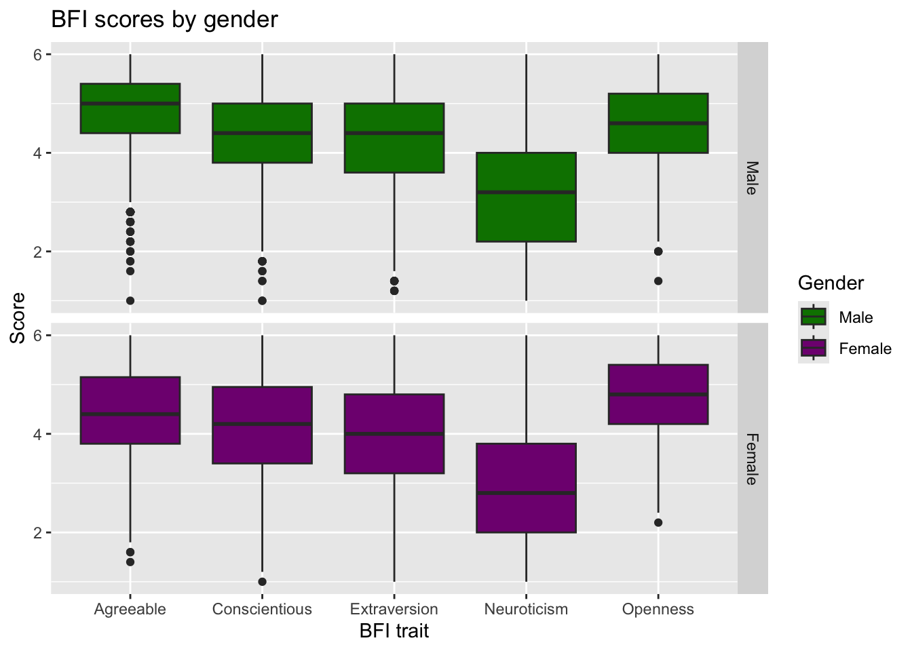
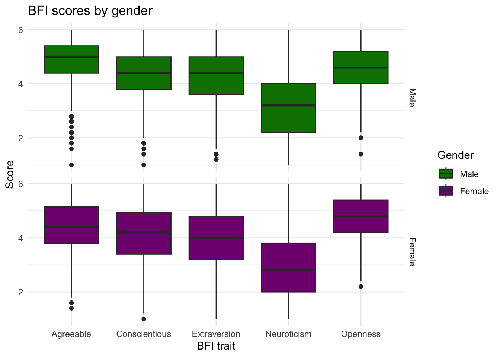
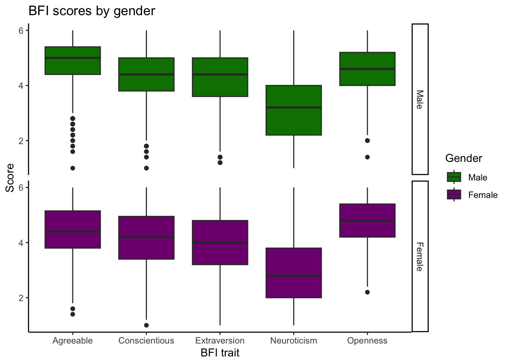
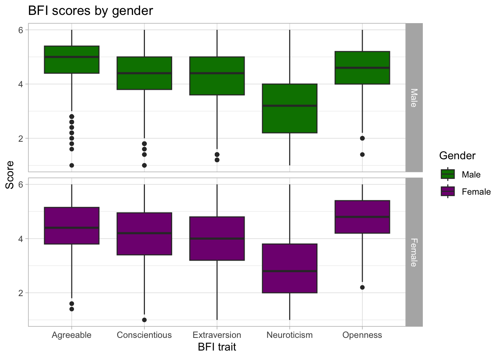
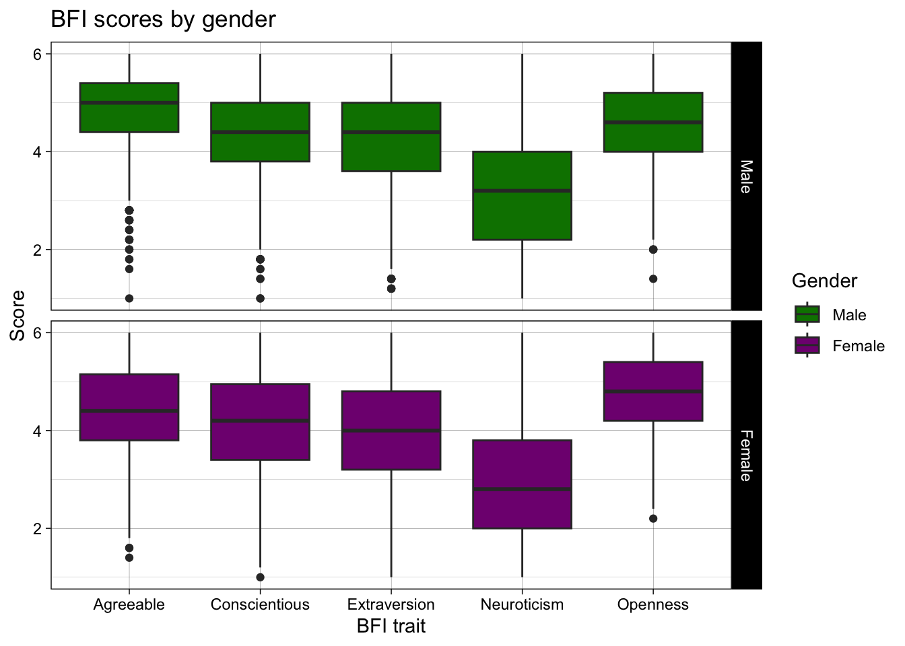
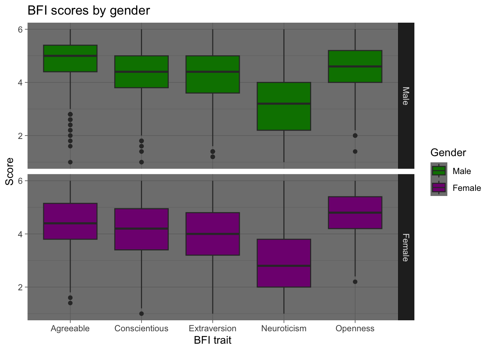
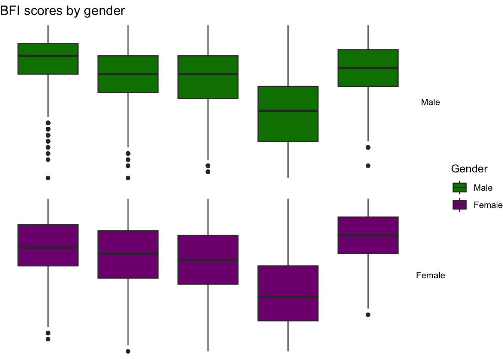

library(tidyverse)
# Load prepared dataset (created by src/data_prep/bfi_traits.R)
scores <- read_csv2("../assets/data/bfi_traits.csv")
# Base plot: keep geometry constant, no explicit theme here
base_plot <- scores %>%
pivot_longer(
cols = agree:openness,
names_to = "trait",
values_to = "score"
) %>%
mutate(
gender = factor(gender, labels = c("Male", "Female")),
trait = factor(
trait,
levels = c("agree", "conscientious", "extraversion", "neuroticism", "openness"),
labels = c("Agreeable", "Conscientious", "Extraversion", "Neuroticism", "Openness")
)
) %>%
ggplot(aes(x = trait, y = score, fill = gender)) +
geom_boxplot() +
labs(
x = "BFI trait",
y = "Score",
title = "BFI scores by gender"
) +
scale_fill_manual(
name = "Gender",
values = c("#008000", "#800080")
) +
facet_grid(rows = vars(gender), labeller = label_value)Theme showcase: one plot, many looks
This page shows how different ggplot2 themes change the same plot. We keep the data and geoms fixed, and only swap the theme.
Use it as inspiration when polishing your own figures.
Data
We use a custom-prepared subset of personality questionnaire data based on the Big Five Inventory (BFI) included in the psych R package by William Revelle (Northwestern University).
Original data source: Revelle, W. (2024). psych: Procedures for Psychological, Psychometric, and Personality Research. Available from CRAN: https://cran.r-project.org/package=psych
What we use here:
- the original BFI dataset (25 self-report items + demographics),
- scored into five trait scales using
psych::scoreItems(), - cleaned, labeled, and saved as
bfi_traits.csvfor teaching purposes.
If you want to reproduce the processed file, see src/data_prep/bfi_traits.R.
Download the dataset (bfi_traits.csv)
Default look (no theme added)
This is what ggplot uses by default (theme_gray()).
base_plot
theme_gray()
The default ggplot theme with a light gray background.
Good when you want a “standard R look” or to emphasize the data over styling.
base_plot + theme_gray()
theme_minimal()
Very light, low‑ink design.
Nice for slides and papers when you want the plot to feel airy and modern.
base_plot + theme_minimal()
theme_classic()
White background, clear axes, no gridlines.
Great for simple teaching plots and for publications where grids feel cluttered.
base_plot + theme_classic()
theme_bw()
Black‑and‑white theme with grids.
A safe “journal‑style” default, especially for printing.
base_plot + theme_bw()theme_light()
Similar to theme_gray() but lighter and cleaner.
Good when you want grids, but less visual weight.
base_plot + theme_light()
theme_linedraw()
Crisp black lines with minimal distractions.
Useful for technical figures and when you expect black‑and‑white reproduction.
base_plot + theme_linedraw()
theme_dark()
Dark background with light grids.
Can work on dark slides, or when you want a dramatic contrast.
base_plot + theme_dark()
theme_void()
Removes everything except the data.
Good for artistic visuals, insets, or when you add your own annotations later.
base_plot + theme_void()